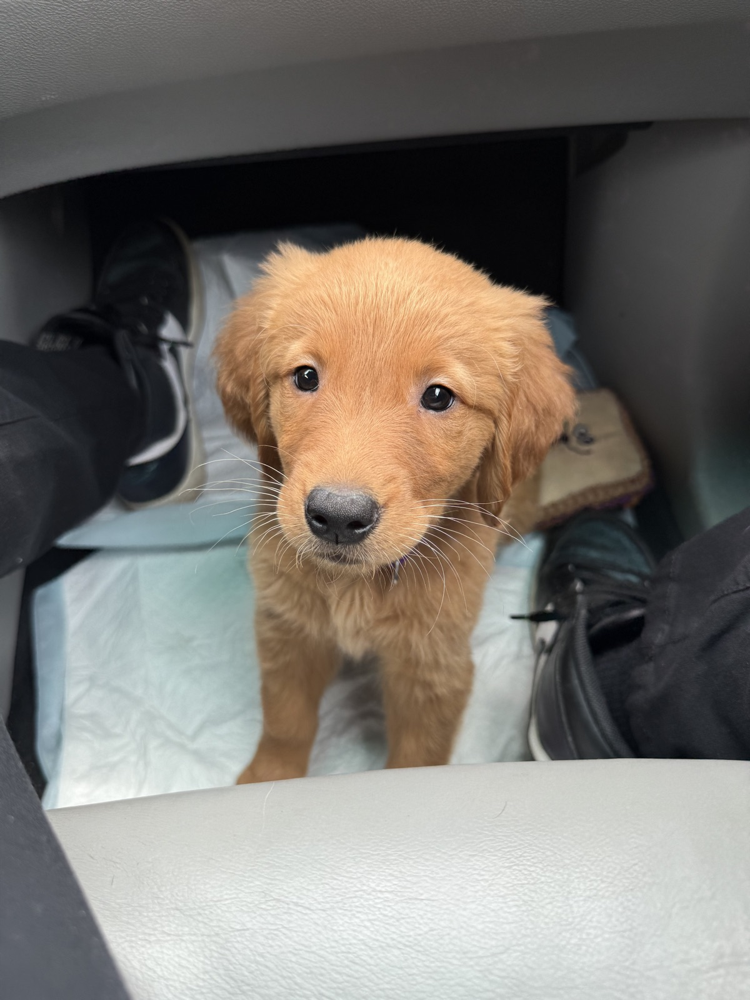

The staircase
Train step by step. If Winnie struggles, make the rep easier: less duration, less excitement, fewer distractions. Win small, then build back up.

Crowned K9s Find My Puppy Academy
Your guide to living with Winnie: clear communication, smart potty structure, daily tether and crate rhythm, and the play-and-cuddle balance that helps a sweet Golden thrive at home.
Golden Retriever · Private family playbook

Lead with Confidence, Train with Crowned K9s.
Know your pup
Winnie is food motivated until she is full or over it, very toy and play motivated, and loves physical touch. Rotate food, toys, touch, and praise so she stays engaged without getting overstimulated.
Your daily structure
When in doubt, take Winnie out. She is doing excellent with potty training—only 2 accidents in 3 weeks—but structure still wins.
She typically poops about 2-3 times per day, often right after meals. Have your shoes on and be ready to go outside as soon as she finishes eating.
Great signal: Winnie will whine in the crate when she needs to potty. When you hear it, take her out right away and use Hurry Up.
Limit her water intake to help prevent accidents. Offer water with structure rather than free access all day while she is still building house training habits.
Let Winnie sleep in the crate once a day to build independence and help prevent separation anxiety. Keep departures boring and returns low-key.
At her potty spot, say Hurry Up once. Stay neutral until she goes, then mark Yes and pay big.
Communication
Winnie responds well to clear, upbeat communication. Pair your words with fair leash guidance, toys, touch, and food when she gets it right.
Use Yes to mark the exact moment she gets it right, then reward. Example: her bottom hits the floor on Sit -> Yes -> food, praise, touch, or access.
Use Good to tell her to keep holding the behavior. This is useful for Place, Down, and calm greetings.
Break is her release word. After Sit, Down, Place, or Wait, she should wait for Break before getting up, bolting through a door, or diving at the food bowl.
Ant ant is her correction/interrupter. Say it once, then immediately guide the right choice: return to Place, reset the behavior, or ask for a known command.
How she was taught
Winnie was not just taught words; she was taught a system. These concepts are the homework that keeps her training from fading once she is home.
Train step by step. If Winnie struggles, make the rep easier: less duration, less excitement, fewer distractions. Win small, then build back up.
Keep reps short (often 1-2 minutes). End on a success while she is still engaged—leave her wanting more.
Use Yes, Good, and Break daily. One cue, one outcome.
A rep counts when you release her with Break. Self-releases mean the next rep should be shorter or easier.
Because she loves food, toys, and touch, mix all three so she stays motivated without getting over-aroused.
Daily tether time and planned crate rest teach calm structure and help prevent separation anxiety.
What she knows
Winnie knows these behaviors. Your job is to help her learn that your voice, leash guidance, timing, and house rules mean the same thing. Duration behaviors end with Break when you are finished holding the position.
Means
Look in your eyes / check in.
Your practice
Say Winnie once. When she looks at you, mark with Yes and reward. Her name should mean attention, not background noise.
Means
Bottom on the floor; a polite default before food, play, and greetings.
Your practice
Ask for Sit before meals and attention. You can also use light upward leash pressure to help her understand. Release with Break when you are done holding the position.
Means
Lie down and settle her body.
Your practice
Use short reps first. Mark with Yes, build duration with Good, then release with Break. Light downward leash pressure can help guide her into position.
Means
Go to her bed/mat and stay there until Break.
Your practice
Use Place during meals, guests, TV time, and whenever she needs an off switch.
Home life cues
Means
Pause at the food bowl until you release with Break.
Your practice
Use Wait before every meal. Do not let her dive in until you say Break.
Means
Potty outside - now.
Your practice
Say Hurry Up at her potty spot; stay boring until she goes, then Yes and a real payoff.
Means
Move toward you when she hears your recall sound.
Your practice
Winnie has been taught to come to kissy sounds, not only the word "Come." Use the same sound consistently, reward generously when she commits, and keep early reps easy.
Means
Upward leash pressure means Sit. Downward leash pressure means Down.
Your practice
Use light, fair pressure as guidance—not a tug-of-war. Pair pressure with the verbal cue, mark with Yes, and reward when she responds.
House manners
Winnie loves to cuddle, but she can get very energetic in play mode. Use toys and short play bursts, then redirect to Place or crate rest before she gets too wild.
Daily tether time helps Winnie learn to settle near you without rehearsing jumping, mouthing, or demand behaviors. Keep it calm and reward quiet choices.
Because she loves toys and physical touch, use them for calm behavior—not only for wild play. A quick toy reward after Sit or Place can be just as powerful as food.
Welcome home
Winnie has a sweet temperament and a strong potty foundation. Your job now is to keep structure, communication, and daily rhythm consistent so she can keep thriving at home.
Lead with Confidence, Train with Crowned K9s.
Text: 919-816-2426 · lorenzo@crownedk9s.com · crownedk9s.com